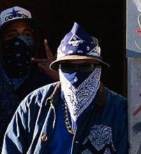

Макет Дмитрия Терешкина
Динамическое программирование по подмножествам (по маскам) Задача о коммивояжере представляет собой поиск кратчайшего гамильтонова цикла в графе. Зафиксируем начальную вершину ss и будем искать гамильтонов цикл наименьшей стоимости — путь от ss до ss, проходящий по всем вершинам (кроме первоначальной) один раз. Т.к. искомый цикл проходит через каждую вершину, то выбор ss не имеет значения. Поэтому будем считать s=0s=0. Подмножества вершин будем кодировать битовыми векторами, обозначим maskimaski значение ii-ого бита в векторе maskmask. Обозначим d[i][mask]d[i][mask] как наименьшую стоимость пути из вершины ii в вершину 00, проходящую (не считая вершины ii) единожды по всем тем и только тем вершинам jj, для которых maskj=1maskj=1 (т.е. d[i][mask]d[i][mask] уже найденный оптимальный путь от ii-ой вершины до 00-ой, проходящий через те вершины, где maskj=1maskj=1. Если maskj=0maskj=0,то эти вершины еще не посещены). Алгоритм поиска цикла будет выглядеть следующим образом: Начальное состояние — когда находимся в 00-й вершине, ни одна вершина не посещена, а пройденный путь равен 00 (т.е. i=0i=0 и mask=0mask=0). Для остальных состояний (i≠0i≠0 или mask≠0mask≠0) перебираем все возможные переходы в ii-ую вершину из любой посещенной ранее и выбираем минимальный результат. Если возможные переходы отсутствуют, решения для данной подзадачи не существует (обозначим ответ для такой подзадачи как ∞∞). Стоимостью минимального гамильтонова цикла в исходном графе будет значение d[0][2n−1]d[0][2n−1] — стоимость пути из 00-й вершины в 00-ю, при необходимости посетить все вершины. Данное решение требует O(2n×n)O(2n×n) памяти и O(2n×n2)O(2n×n2) времени. Для того, чтобы восстановить сам путь, воспользуемся соотношением d[i][mask]=w(i,j)+d[j][mask−2j]d[i][mask]=w(i,j)+d[j][mask−2j], которое выполняется для всех ребер, входящих в минимальный цикл . Начнем с состояния i=0i=0, mask=2n−1mask=2n−1, найдем вершину jj, для которой выполняется указанное соотношение, добавим jj в ответ, пересчитаем текущее состояние как i=ji=j, mask=mask−2jmask=mask−2j. Процесс заканчивается в состоянии i=0i=0, mask=0mask=0.Для того, чтобы восстановить сам путь, воспользуемся соотношением d[i][mask]=w(i,j)+d[j][mask−2j]d[i][mask]=w(i,j)+d[j][mask−2j], которое выполняется для всех ребер, входящих в минимальный цикл . Начнем с состояния i=0i=0, mask=2n−1mask=2n−1, найдем вершину jj, для которой выполняется указанное соотношение, добавим jj в ответ, пересчитаем текущее состояние как i=ji=j, mask=mask−2jmask=mask−2j. Процесс заканчивается в состоянии i=0i=0, mask=0mask=0. Для того, чтобы восстановить сам путь, воспользуемся соотношением d[i][mask]=w(i,j)+d[j][mask−2j]d[i][mask]=w(i,j)+d[j][mask−2j], которое выполняется для всех ребер, входящих в минимальный цикл . Начнем с состояния i=0i=0, mask=2n−1mask=2n−1, найдем вершину jj, для которой выполняется указанное соотношение, добавим jj в ответ, пересчитаем текущее состояние как i=ji=j, mask=mask−2jmask=mask−2j. Процесс заканчивается в состоянии i=0i=0, mask=0mask=0. Для того, чтобы восстановить сам путь, воспользуемся соотношением d[i][mask]=w(i,j)+d[j][mask−2j]d[i][mask]=w(i,j)+d[j][mask−2j], которое выполняется для всех ребер, входящих в минимальный цикл . Начнем с состояния i=0i=0, mask=2n−1mask=2n−1, найдем вершину jj, для которой выполняется указанное соотношение, добавим jj в ответ, пересчитаем текущее состояние как i=ji=j, mask=mask−2jmask=mask−2j. Процесс заканчивается в состоянии i=0i=0, mask=0mask=0. Для того, чтобы восстановить сам путь, воспользуемся соотношением d[i][mask]=w(i,j)+d[j][mask−2j]d[i][mask]=w(i,j)+d[j][mask−2j], которое выполняется для всех ребер, входящих в минимальный цикл . Начнем с состояния i=0i=0, mask=2n−1mask=2n−1, найдем вершину jj, для которой выполняется указанное соотношение, добавим jj в ответ, пересчитаем текущее состояние как i=ji=j, mask=mask−2jmask=mask−2j. Процесс заканчивается в состоянии i=0i=0, mask=0mask=0. Для того, чтобы восстановить сам путь, воспользуемся соотношением d[i][mask]=w(i,j)+d[j][mask−2j]d[i][mask]=w(i,j)+d[j][mask−2j], которое выполняется для всех ребер, входящих в минимальный цикл . Начнем с состояния i=0i=0, mask=2n−1mask=2n−1, найдем вершину jj, для которой выполняется указанное соотношение, добавим jj в ответ, пересчитаем текущее состояние как i=ji=j, mask=mask−2jmask=mask−2j. Процесс заканчивается в состоянии i=0i=0, mask=0mask=0. Для того, чтобы восстановить сам путь, воспользуемся соотношением d[i][mask]=w(i,j)+d[j][mask−2j]d[i][mask]=w(i,j)+d[j][mask−2j], которое выполняется для всех ребер, входящих в минимальный цикл . Начнем с состояния i=0i=0, mask=2n−1mask=2n−1, найдем вершину jj, для которой выполняется указанное соотношение, добавим jj в ответ, пересчитаем текущее состояние как i=ji=j, mask=mask−2jmask=mask−2j. Процесс заканчивается в состоянии i=0i=0, mask=0mask=0. Для того, чтобы восстановить сам путь, воспользуемся соотношением d[i][mask]=w(i,j)+d[j][mask−2j]d[i][mask]=w(i,j)+d[j][mask−2j], которое выполняется для всех ребер, входящих в минимальный цикл . Начнем с состояния i=0i=0, mask=2n−1mask=2n−1, найдем вершину jj, для которой выполняется указанное соотношение, добавим jj в ответ, пересчитаем текущее состояние как i=ji=j, mask=mask−2jmask=mask−2j. Процесс заканчивается в состоянии i=0i=0, mask=0mask=0.
Контент блок
Контент блок
Контент блок
Контент блок
Контент блок
Динамическое программирование по подмножествам (по маскам) Задача о коммивояжере представляет собой поиск кратчайшего гамильтонова цикла в графе. Зафиксируем начальную вершину ss и будем искать гамильтонов цикл наименьшей стоимости — путь от ss до ss, проходящий по всем вершинам (кроме первоначальной) один раз. Т.к. искомый цикл проходит через каждую вершину, то выбор ss не имеет значения. Поэтому будем считать s=0s=0. Подмножества вершин будем кодировать битовыми векторами, обозначим maskimaski значение ii-ого бита в векторе maskmask. Обозначим d[i][mask]d[i][mask] как наименьшую стоимость пути из вершины ii в вершину 00, проходящую (не считая вершины ii) единожды по всем тем и только тем вершинам jj, для которых maskj=1maskj=1 (т.е. d[i][mask]d[i][mask] уже найденный оптимальный путь от ii-ой вершины до 00-ой, проходящий через те вершины, где maskj=1maskj=1. Если maskj=0maskj=0,то эти вершины еще не посещены). Алгоритм поиска цикла будет выглядеть следующим образом: Начальное состояние — когда находимся в 00-й вершине, ни одна вершина не посещена, а пройденный путь равен 00 (т.е. i=0i=0 и mask=0mask=0). Для остальных состояний (i≠0i≠0 или mask≠0mask≠0) перебираем все возможные переходы в ii-ую вершину из любой посещенной ранее и выбираем минимальный результат. Если возможные переходы отсутствуют, решения для данной подзадачи не существует (обозначим ответ для такой подзадачи как ∞∞).
© 2022-My-First. All rights reseverd.| 1 | ||||||||||||||||||||||||||||||||||||||||||||||
| 2 | 3 | 4 | ||||||||||||||||||||||||||||||||||||||||||||
| 5 | 6 | 7 | 7 | 7 | 7 | 7 | 7 | 7 | 7 | 7 | 7 | 7 | 7 | 7 | 7 | 7 | 7 | 7 | 7 | 7 | 7 | 7 | 7 | 7 | 7 | 7 | 7 | 7 | 7 | 7 | 7 | 7 | 7 | 7 | 7 | 7 | 7 | 7 | 7 | 7 | 7 | 7 | 7 | 7 | 7 | 7 |